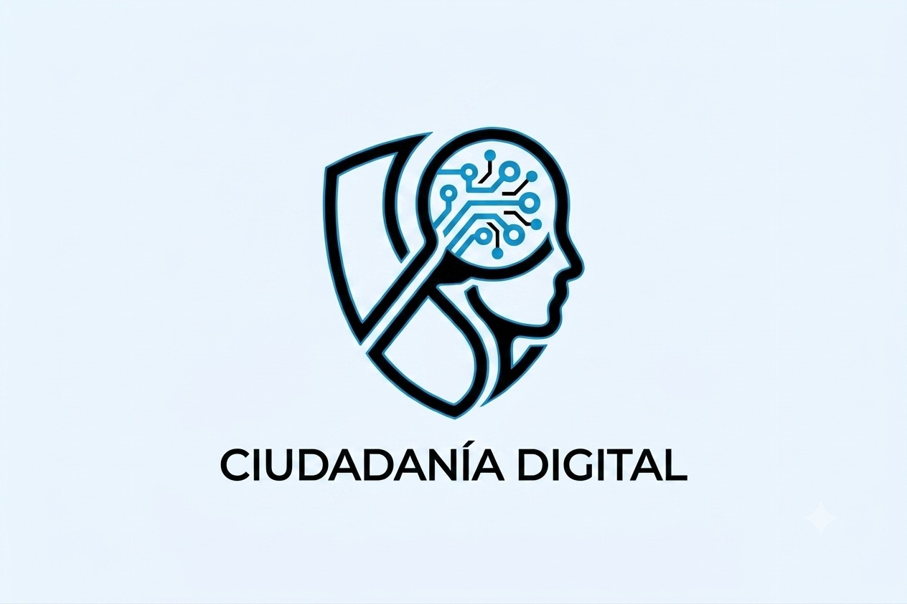

Entrada 1
Presentación del Proyecto
Descubre el origen de Fiscalía Digital, los objetivos del proyecto, su enfoque educativo y el impacto esperado en la formación de ciudadanos digitales responsables.
Explorar publicaciónUn espacio creado para fortalecer la ciudadanía digital mediante el uso responsable de la tecnología, la inteligencia artificial, la ciberseguridad y la verificación de la información.
Explorar el Blog
Fiscalía Digital es una estrategia educativa desarrollada dentro del proyecto Conectando al Futuro: Inclusión Digital, orientada a fortalecer las competencias en ciudadanía digital, alfabetización mediática, verificación de información, ciberseguridad y uso responsable de la inteligencia artificial.
Promover un comportamiento responsable, ético y crítico en los entornos digitales mediante buenas prácticas de participación y comunicación.
Comprender los beneficios, riesgos y buenas prácticas en el uso de herramientas de inteligencia artificial dentro de contextos educativos y sociales.
Fortalecer la protección de datos personales e identidad digital mediante hábitos seguros y responsables en Internet.
Explora cada una de las publicaciones del proyecto y conoce el proceso de desarrollo de la estrategia Fiscalía Digital.
Descubre el origen de Fiscalía Digital, los objetivos del proyecto, su enfoque educativo y el impacto esperado en la formación de ciudadanos digitales responsables.
Explorar publicación
Analizamos los desafíos actuales de la desinformación, la ciudadanía digital, la protección de datos personales y el uso ético de la inteligencia artificial.
Explorar publicación
Conoce cómo se desarrollaron las primeras capacitaciones virtuales sobre ciudadanía digital, desinformación y verificación de información mediante Microsoft Teams y Canva.
Explorar publicaciónExplora la etapa final del proyecto, donde los participantes fortalecieron el pensamiento crítico, comprendieron la identidad digital y aprendieron a proteger sus datos en Internet.
Explorar publicaciónExplora videos y recursos que fortalecen el pensamiento crítico, la verificación de información y la ciudadanía digital responsable.
Descubre por qué analizar, cuestionar y verificar la información es una habilidad esencial en los entornos digitales.
Un ejercicio práctico para desarrollar criterio y evitar compartir contenido engañoso o manipulado.
Cómo aplicar el pensamiento crítico al tomar decisiones y evaluar información en Internet.
Reflexiona sobre el papel que cada persona tiene en la construcción de un entorno digital más seguro y confiable.
Pensar críticamente exige tiempo, práctica y espacios donde sea posible formular preguntas, escuchar otras perspectivas y distinguir entre hechos, opiniones, ficción y desinformación. En Fiscalía Digital promovemos el desarrollo de esta competencia como una herramienta fundamental para una ciudadanía digital responsable.
Materiales de apoyo utilizados durante el desarrollo de la estrategia educativa Fiscalía Digital y recursos recomendados para fortalecer las competencias digitales.
Material elaborado en Canva para las sesiones de capacitación sobre ciudadanía digital, desinformación, inteligencia artificial y ciberseguridad.
Evidencias y actividades desarrolladas mediante Microsoft Teams durante la implementación del proyecto con la comunidad.
Enlaces y referencias institucionales utilizadas para promover la verificación de información y el uso responsable de la tecnología.
Este blog hace parte del Proyecto Social de Formación de Ingeniería de Sistemas de la Corporación Universitaria Minuto de Dios - UNIMINUTO.